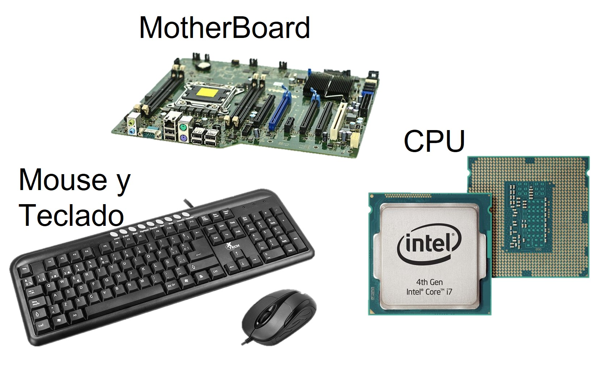
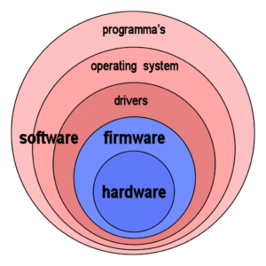

Modulo 3
Conceptos basicos de informatica
Conceptos Basicos
14-05-2022
Software
El software es todo aquel apartado intangible que componen a una computadora, como los programas, reglas informáticas, el sistema operativo, etc. Y estos se encargan de administrar los recursos dentro de la memoria de la computadora, solicitando los recursos necesarios al apartado del hardware (todo lo físico) para llevar a cabo distintas tareas. Los softwares permiten el correcto funcionamiento al cumplir ciertas tareas específicas, indicadas por el usuario o no.hardware
El hardware son todos los componentes físicos de la computadora, y este funciona como el canal físico o los recursos disponible para el funcionamiento del software. A pesar de que las piezas del computador se pueden variar en cada computadora, existen componente que debe acoplarse a las características de algunos de los componentes más importantes como la motherboard que define o delimita que clase de CPU se puede usar. El hardware se divide en dos clases: Hardware Básico y Hardware. Complementario.El hardware Basico
Son todas las piezas fundamentales e imprescindibles para el correcto funcionamiento de la computadora. Algunos son: La motherboard, el CPU, la GPU, la memoria RAM, la fuente de energia, el monitor, el teclado y el rato.
El hardware Complementario
El Hardware Complementario consecuentemente son todas las piezas que no son esenciales, pero le pueden dar una función adicional a la computadora. Algunos son: Impresoras, escáner, audífonos, cámara de video, webcam, micrófono, etc.Middleware
El middleware es un software que asiste a una aplicación para que pueda comunicarse con otras aplicaciones, software, redes, hardware y/o sistemas operativos. Este es muy conveniente para simplificar el trabajo de los programadores, para crear una conexión directa a otros programas, proveyendo una mejor calidad de servicio, seguridad, envió de mensajes y directorio de servicio. Uno de los usos más destacables del middleware es en las aplicaciones de la nube, ya que la aplicación puede implementar múltiples infraestructuras, que van desde los sistemas locales hasta las nubes públicas, sin contar que el desarrollador de manejar varias herramientas, lenguajes y marcos. El middleware se usa para abordar esas complejidades y agilizar el desarrollo de la aplicación, debido a que puede admitir entornos donde se trabajan de manera uniforme y no presente problemas en una plataforma altamente distribuida.Firmware
El firmware es un bloque de instrucciones de programas que dan una orden especifica, esta se graba en una memoria de tipo no volátil (ROM, EEPROM, flash, etc), que estable la lógica de más bajo nivel (0, 1) que controlan los circuitos eléctricos de cualquier dispositivo. Debido a eso es considerado como parte del hardware al estar integrado a los circuitos, pero también es un software que proporciona lógica y orden. Por decirlo de esta manera el firmware es un intermediario entre las ordenes externas que recibe el dispositivo y su electrónica.
 |
 |
Lista de actividades
|

© 2022 Grupo5
© Derechos reservados